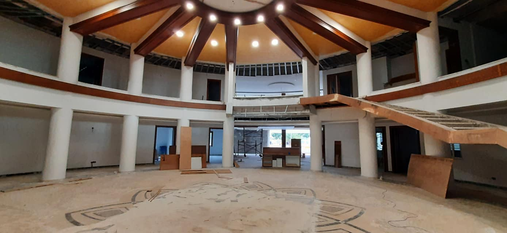
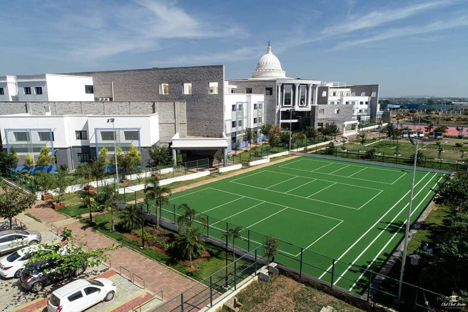
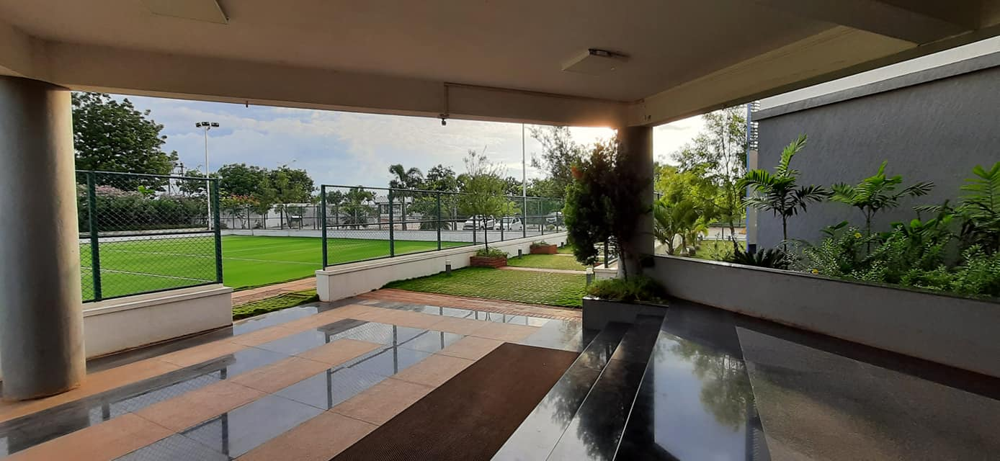
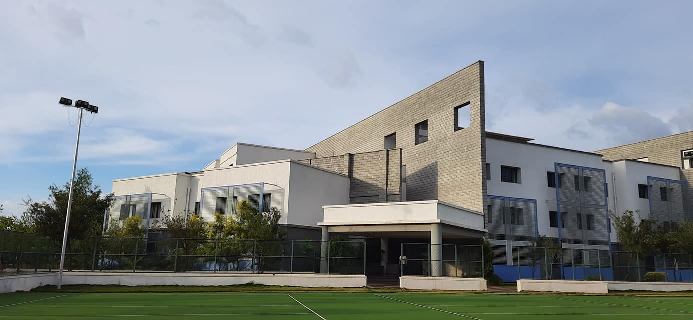
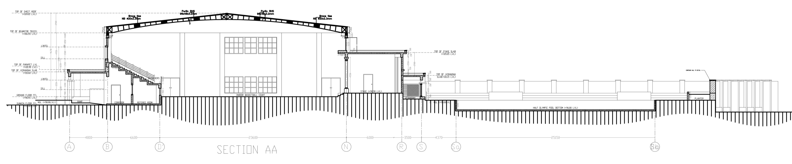

Tejas International School

Overview
Tejas International School is in Bagalkot, in north Karnataka, and is owned and managed by Mr. Murugesh Nirani. Its 14-acre campus holds around two lakh square feet of built space for 700 students. The school opened in 2017 as Tejas International Residential School, a CBSE school for both day scholars and boarders. Of all our schools, it is perhaps the one most shaped by its climate.
Bagalkot is one of the hottest and driest parts of the state. Temperatures regularly reach 40°C, and the heat and aridity persist through every season. In a region like this, the conventional response is to seal buildings up and air-condition them. That approach is expensive to build and run, consumes a great deal of energy, and leaves a school entirely dependent on electricity to stay usable. We wanted a building that would stay comfortable on its own.
Our approach drew on two sources: a careful study of the site's environmental conditions, and the long tradition of Indian building in hot, dry climates. For centuries, buildings across the Deccan have kept cool without machines — through thick walls, shaded courtyards, small openings on sun-facing sides and careful management of air movement. We studied the path of the sun across the site, the direction of prevailing winds and the pattern of heat through the day and the year, and let these shape the design.
The building uses a range of passive cooling strategies. Deep shading protects walls and windows from direct radiation. Openings are placed to encourage cross-ventilation, drawing cooler air through the classrooms and letting hot air escape. Courtyards and shaded outdoor spaces create pockets of cooler air within the campus. Local stone was chosen for its thermal mass and durability, slowing the transfer of heat into the interior during the day.
The results have been measured. Based on documentation provided by the client, the interior spaces stay up to 4°C cooler than the outside air — achieved entirely through architectural design, with no air conditioning or mechanical ventilation. In a climate where outdoor temperatures reach 40°C, those four degrees make a real difference to how children feel, how well they concentrate and how long they can learn comfortably through the day.
This matters beyond comfort. A school that relies on passive design is cheaper to run, uses far less energy and keeps working when the power fails. It also teaches, quietly, a lesson about building in a warming world. Children who grow up in a building that stays cool by design learn that comfort does not have to come from a machine, and that architecture can respond intelligently to the place where it stands.
Tejas also had to work as a school in every other sense — classrooms, laboratories, play spaces and shared areas for an international curriculum and a community of 700 students. The passive strategies were built into the planning from the start, so that the spaces that keep the building cool are also the spaces where children gather, play and learn. The school was built to CBSE's affiliation norms, with classrooms of at least 500 square feet, dedicated laboratories and a library, and its boarding facilities were planned alongside the academic blocks to the board's requirements for residential schools.
For us, Tejas is a clear demonstration of a principle we hold across all our work: thoughtful, context-specific design can solve problems that are usually handed over to technology. In one of Karnataka's most demanding climates, careful architecture has created a learning environment that is comfortable, sustainable and resilient.
Architects — Kumar & Swamy Architects, Bangalore







Planning a school or campus?
Tell us about your institution — a new campus, an extension, a master plan or a renovation. Every project starts with a conversation.